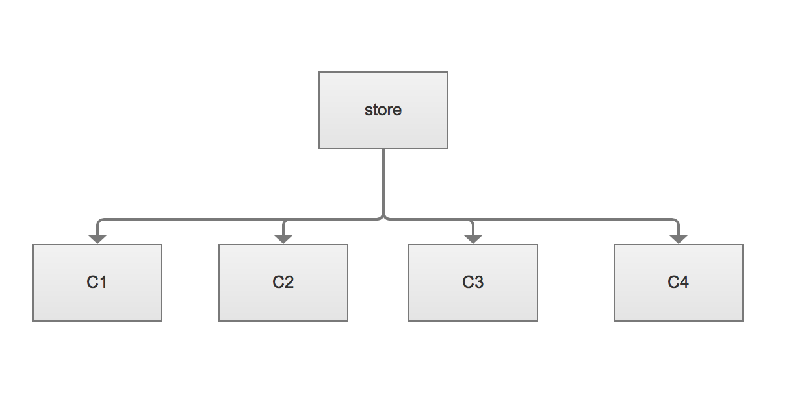
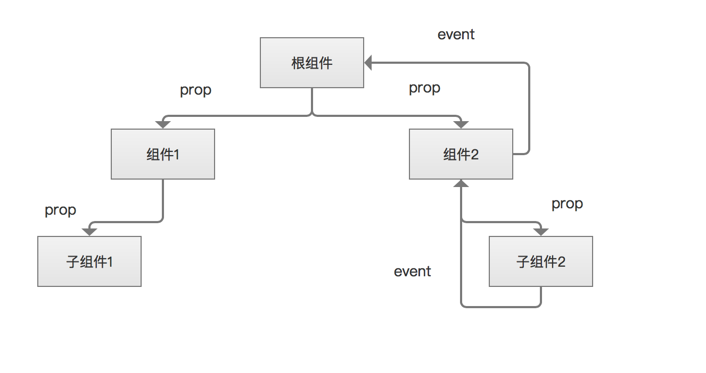
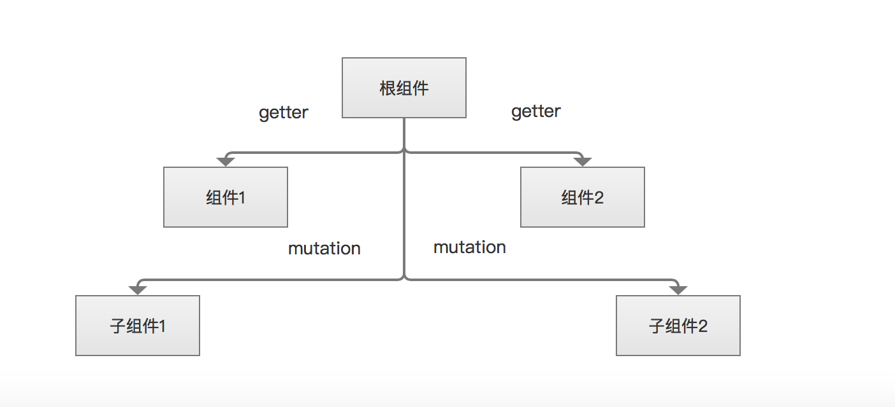
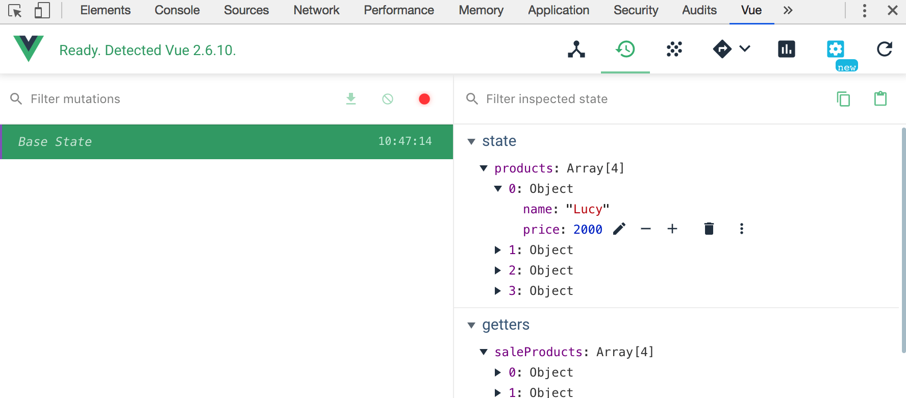
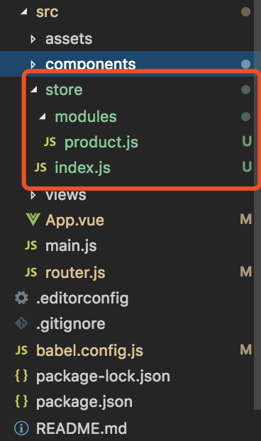

<!DOCTYPE html>
<html>
<head><meta name="generator" content="Hexo 3.8.0">
  <meta charset="utf-8">
  
  <title>搭建vuex中央状态管理 | guowj</title>
  <meta name="viewport" content="width=device-width, initial-scale=1, maximum-scale=1">
  
  <meta name="keywords" content="异步JS框架渐进式Vuex">
  
  
  
  
  <meta name="description" content="&amp;nbsp;&amp;nbsp;&amp;nbsp;&amp;nbsp;&amp;nbsp;&amp;nbsp;Vuex 通过创建一个集中的数据存储，供程序中所有组件访问。主要应用于 Vue.js 中管理数据状态的一个库。接下来我用一张图来帮助我们更好的理解什么是 Vuex。图中 store 是一个仓库，装的是数据源。下面的 c1-c4,分别代表 component1-component4. 这里面的组件都可以去使用我们 store">
<meta name="keywords" content="异步,JS框架,渐进式,Vuex">
<meta property="og:type" content="article">
<meta property="og:title" content="搭建Vuex中央状态管理">
<meta property="og:url" content="https://gwjacqueline.github.io/搭建Vuex中央状态管理/index.html">
<meta property="og:site_name" content="guowj">
<meta property="og:description" content="&amp;nbsp;&amp;nbsp;&amp;nbsp;&amp;nbsp;&amp;nbsp;&amp;nbsp;Vuex 通过创建一个集中的数据存储，供程序中所有组件访问。主要应用于 Vue.js 中管理数据状态的一个库。接下来我用一张图来帮助我们更好的理解什么是 Vuex。图中 store 是一个仓库，装的是数据源。下面的 c1-c4,分别代表 component1-component4. 这里面的组件都可以去使用我们 store">
<meta property="og:locale" content="zh-CN">
<meta property="og:image" content="https://gwjacqueline.github.io/images/vuex1.png">
<meta property="og:image" content="https://gwjacqueline.github.io/images/vuejs场景.png">
<meta property="og:image" content="https://gwjacqueline.github.io/images/vuexjs使用场景.png">
<meta property="og:image" content="https://gwjacqueline.github.io/images/vueDevtools.png">
<meta property="og:image" content="https://gwjacqueline.github.io/images/vuex-module.png">
<meta property="og:updated_time" content="2019-06-02T10:39:01.000Z">
<meta name="twitter:card" content="summary">
<meta name="twitter:title" content="搭建Vuex中央状态管理">
<meta name="twitter:description" content="&amp;nbsp;&amp;nbsp;&amp;nbsp;&amp;nbsp;&amp;nbsp;&amp;nbsp;Vuex 通过创建一个集中的数据存储，供程序中所有组件访问。主要应用于 Vue.js 中管理数据状态的一个库。接下来我用一张图来帮助我们更好的理解什么是 Vuex。图中 store 是一个仓库，装的是数据源。下面的 c1-c4,分别代表 component1-component4. 这里面的组件都可以去使用我们 store">
<meta name="twitter:image" content="https://gwjacqueline.github.io/images/vuex1.png">
  
    <link rel="alternate" href="/atom.xml" title="guowj" type="application/atom+xml">
  

  

  <link rel="icon" href="/css/images/mylogo.png">
  <link rel="apple-touch-icon" href="/css/images/mylogo.png">
  
    <link href="//fonts.googleapis.com/css?family=Source+Code+Pro" rel="stylesheet" type="text/css">
  
  <link href="https://fonts.googleapis.com/css?family=Open+Sans|Montserrat:700" rel="stylesheet" type="text/css">
  <link href="https://fonts.googleapis.com/css?family=Roboto:400,300,300italic,400italic" rel="stylesheet" type="text/css">
  <link href="//netdna.bootstrapcdn.com/font-awesome/4.0.3/css/font-awesome.css" rel="stylesheet">
  <style type="text/css">
    @font-face{font-family:futura-pt; src:url("../css/fonts/FuturaPTBold.otf") format("woff");font-weight:500;font-style:normal;}
    @font-face{font-family:futura-pt-light; src:url("../css/fonts/FuturaPTBook.otf") format("woff");font-weight:lighter;font-style:normal;}
    @font-face{font-family:futura-pt-italic; src:url("../css/fonts/FuturaPTBookOblique.otf") format("woff");font-weight:400;font-style:italic;}
}

  </style>
  <link rel="stylesheet" href="/css/style.css">

  <script src="/js/jquery-3.1.1.min.js"></script>
  <script src="/js/bootstrap.js"></script>

  <!-- Bootstrap core CSS -->
  <link rel="stylesheet" href="/css/bootstrap.css">

  
    <link rel="stylesheet" href="/css/dialog.css">
  

  

  
    <link rel="stylesheet" href="/css/header-post.css">
  

  
  
  
    <link rel="stylesheet" href="/css/vdonate.css">
  

</head>
</html>


  <body data-spy="scroll" data-target="#toc" data-offset="50">


  
  <div id="container">
    <div id="wrap">
      
        <header>

    <div id="allheader" class="navbar navbar-default navbar-static-top" role="navigation">
        <div class="navbar-inner">
          
          <div class="container"> 
            <button type="button" class="navbar-toggle" data-toggle="collapse" data-target=".navbar-collapse">
              <span class="sr-only">Toggle navigation</span>
              <span class="icon-bar"></span>
              <span class="icon-bar"></span>
              <span class="icon-bar"></span>
            </button>

            
              <a class="brand" style="
                 margin-top: 0px;" href="#" data-toggle="modal" data-target="#myModal">
                  
              </a>
            
            
            <div class="navbar-collapse collapse">
              <ul class="hnav navbar-nav">
                
                  <li> <a class="main-nav-link" href="/">首页</a> </li>
                
                  <li> <a class="main-nav-link" href="/archives">归档</a> </li>
                
                  <li> <a class="main-nav-link" href="/categories">分类</a> </li>
                
                  <li> <a class="main-nav-link" href="/tags">标签</a> </li>
                
                  <li><div id="search-form-wrap">

    <form class="search-form">
        <input type="text" class="ins-search-input search-form-input" placeholder>
        <button type="submit" class="search-form-submit"></button>
    </form>
    <div class="ins-search">
    <div class="ins-search-mask"></div>
    <div class="ins-search-container">
        <div class="ins-input-wrapper">
            <input type="text" class="ins-search-input" placeholder="请输入关键词...">
            <span class="ins-close ins-selectable"><i class="fa fa-times-circle"></i></span>
        </div>
        <div class="ins-section-wrapper">
            <div class="ins-section-container"></div>
        </div>
    </div>
</div>
<script>
(function (window) {
    var INSIGHT_CONFIG = {
        TRANSLATION: {
            POSTS: '文章',
            PAGES: '页面',
            CATEGORIES: '分类',
            TAGS: '标签',
            UNTITLED: '(无标题)',
        },
        ROOT_URL: '/',
        CONTENT_URL: '/content.json',
    };
    window.INSIGHT_CONFIG = INSIGHT_CONFIG;
})(window);
</script>
<script src="/js/insight.js"></script>

</div></li>
            </ul></div>
          </div>
                
      </div>
    </div>

</header>


      
            
      <div id="content" class="outer">
        
          <section id="main" style="float:none;"><article id="post-搭建Vuex中央状态管理" style="width: 75%; float:left;" class="article article-type-post" itemscope itemprop="blogPost">
  <div id="articleInner" class="article-inner">
    
    
      <header class="article-header">
        
  
    <h1 class="thumb" itemprop="name">
      搭建Vuex中央状态管理
    </h1>
  

      </header>
    
    <div class="article-meta">
      
	<a href="/搭建Vuex中央状态管理/" class="article-date">
	  <time datetime="2019-06-02T07:29:16.000Z" itemprop="datePublished">2019-06-02</time>
	</a>

      
    <a class="article-category-link" href="/categories/Vue/">Vue</a>

      
	<a class="article-views">
	<span id="busuanzi_container_page_pv">
		阅读量<span id="busuanzi_value_page_pv"></span>
	</span>
	</a>

      

    </div>
    <div class="article-entry" itemprop="articleBody">
      
        <blockquote>
<p>&nbsp;&nbsp;&nbsp;&nbsp;&nbsp;&nbsp;Vuex 通过创建一个集中的数据存储，供程序中所有组件访问。主要应用于 Vue.js 中管理数据状态的一个库。接下来我用一张图来帮助我们更好的理解什么是 Vuex。图中 store 是一个仓库，装的是数据源。下面的 c1-c4,分别代表 component1-component4. 这里面的组件都可以去使用我们 store 里面的数据。Vuex 帮助我们实现了数据统一管理的功能 。</p>
</blockquote>
<div align="center"><br>  <br></div>

<a id="more"></a>
<h2 id="Vue-js-和-Vuex-js-使用场景中的数据处理"><a href="#Vue-js-和-Vuex-js-使用场景中的数据处理" class="headerlink" title="Vue.js 和 Vuex.js 使用场景中的数据处理"></a>Vue.js 和 Vuex.js 使用场景中的数据处理</h2><h3 id="Vue-js"><a href="#Vue-js" class="headerlink" title="Vue.js"></a>Vue.js</h3><p>&nbsp;&nbsp;&nbsp;&nbsp;&nbsp;&nbsp;我们来看下单一使用 Vue 场景下，我们一般是怎么处理数据的。图中最上面有一个根组件，假设里面的 data 有很多数据。在根组件之下，又有两个组件，分别是组件 1 和组件 2，再往下，这两个组件又有自己的子组件。我们知道根组件下面的 2 个组件如果想要获取到根组件的数据，需要通过 vue 当中的<code>prop</code>进行传值。组件下面的 2 个子组件，我们也可以通过<code>prop</code>进行属性传值。但是如果子组件想要去修改一些数据的话，那么子组件就需要触发某一个事件然后传给父组件，然后父组件也需要触发某个事件，再传给他的根组件，这样我们的数据就发送变化了。当我们的数据发生变化后，data 就会分别传给下面的组件 1 和组件 2。这样就会有一个问题，比如最下面的两个子组件想要数据共用的话，就很麻烦。因为要从子组件 2 中一直往上传，基本上是绕了一大圈，然后才到子组件 1。这样是可以做到数据传递的，但是它的使用方式非常的麻烦，</p>
<div align="center"><br>  <br></div>

<h3 id="Vuex-js"><a href="#Vuex-js" class="headerlink" title="Vuex.js"></a>Vuex.js</h3><p>&nbsp;&nbsp;&nbsp;&nbsp;&nbsp;&nbsp;接下来我们看看 Vuex 场景中的数据处理是什么样的。我们有一个<code>store</code>用来存储数据，如果我们要添加、更改一些数据。我们就可以用<code>mutation</code>方法去更改一下。子组件中修改了数据，那么<code>store</code>就会把修改后的数据分散到对应的组件，这样就就能更清晰的管理数据了。</p>
<div align="center"><br>  <br></div>

<h2 id="安装及使用"><a href="#安装及使用" class="headerlink" title="安装及使用"></a>安装及使用</h2><p>&nbsp;&nbsp;&nbsp;&nbsp;&nbsp;&nbsp;如果在脚手架中没有安装<code>Vuex</code>的，可以使用以下命令安装并使用。脚手架安装过<code>Vuex</code>的，可以忽略这一步。</p>
<p>1.安装</p>
<figure class="highlight plain"><table><tr><td class="gutter"><pre><span class="line">1</span><br></pre></td><td class="code"><pre><span class="line">npm install vuex —save</span><br></pre></td></tr></table></figure>
<p>2.创建 store.js 并引入对应组件</p>
<figure class="highlight plain"><table><tr><td class="gutter"><pre><span class="line">1</span><br><span class="line">2</span><br><span class="line">3</span><br><span class="line">4</span><br><span class="line">5</span><br><span class="line">6</span><br><span class="line">7</span><br><span class="line">8</span><br></pre></td><td class="code"><pre><span class="line">import Vue from &apos;vue&apos;</span><br><span class="line">import Vuex from &apos;vuex&apos;</span><br><span class="line"></span><br><span class="line">Vue.use(Vuex)</span><br><span class="line"></span><br><span class="line">export default new Vuex.Store(&#123;</span><br><span class="line"></span><br><span class="line">&#125;)</span><br></pre></td></tr></table></figure>
<p>3.在 main.js 中引入</p>
<figure class="highlight plain"><table><tr><td class="gutter"><pre><span class="line">1</span><br><span class="line">2</span><br><span class="line">3</span><br><span class="line">4</span><br><span class="line">5</span><br></pre></td><td class="code"><pre><span class="line">import store from &apos;./store&apos;</span><br><span class="line">new Vue(&#123;</span><br><span class="line">  store,</span><br><span class="line">  render: h =&gt; h(App)</span><br><span class="line">&#125;).$mount(&apos;#app&apos;)</span><br></pre></td></tr></table></figure>
<h2 id="核心概念"><a href="#核心概念" class="headerlink" title="核心概念"></a>核心概念</h2><p>&nbsp;&nbsp;&nbsp;&nbsp;&nbsp;&nbsp;Vuex 的核心概念有五个，分别是 State(状态)、Getter(获取状态)、Mutation(改变状态)、Action(通过异步操作 Mutation 改变状态) 以及 Module(将前面几个模块化)。</p>
<h3 id="State"><a href="#State" class="headerlink" title="State"></a>State</h3><p>&nbsp;&nbsp;&nbsp;&nbsp;&nbsp;&nbsp;接下来我将用<code>vue</code>父组件向子组件传值的例子来看看换成<code>vuex</code>的 State 应该怎么去实现。</p>
<h4 id="vue-父组件向子组件传值"><a href="#vue-父组件向子组件传值" class="headerlink" title="vue 父组件向子组件传值"></a>vue 父组件向子组件传值</h4><p>父组件</p>
<figure class="highlight plain"><table><tr><td class="gutter"><pre><span class="line">1</span><br><span class="line">2</span><br><span class="line">3</span><br><span class="line">4</span><br><span class="line">5</span><br><span class="line">6</span><br><span class="line">7</span><br><span class="line">8</span><br><span class="line">9</span><br><span class="line">10</span><br><span class="line">11</span><br><span class="line">12</span><br><span class="line">13</span><br><span class="line">14</span><br><span class="line">15</span><br><span class="line">16</span><br><span class="line">17</span><br><span class="line">18</span><br><span class="line">19</span><br><span class="line">20</span><br><span class="line">21</span><br><span class="line">22</span><br><span class="line">23</span><br><span class="line">24</span><br><span class="line">25</span><br><span class="line">26</span><br><span class="line">27</span><br></pre></td><td class="code"><pre><span class="line">&lt;template&gt;</span><br><span class="line">  &lt;div id=&quot;app&quot;&gt;</span><br><span class="line">    &lt;product-view-one v-bind:products=&quot;products&quot;&gt;&lt;/product-view-one&gt;</span><br><span class="line">  &lt;/div&gt;</span><br><span class="line">&lt;/template&gt;</span><br><span class="line">&lt;script&gt;</span><br><span class="line">import ProductViewOne from &quot;./components/ProductViewOne&quot;;</span><br><span class="line">import ProductViewTwo from &quot;./components/ProductViewTwo&quot;;</span><br><span class="line"></span><br><span class="line">export default &#123;</span><br><span class="line">  name: &quot;app&quot;,</span><br><span class="line">  data() &#123;</span><br><span class="line">    return &#123;</span><br><span class="line">     //父组件data</span><br><span class="line">      products: [</span><br><span class="line">        &#123; name: &quot;Lucy&quot;, price: 2000 &#125;,</span><br><span class="line">        &#123; name: &quot;Daming&quot;, price: 1000 &#125;,</span><br><span class="line">        &#123; name: &quot;Henry&quot;, price: 100 &#125;,</span><br><span class="line">        &#123; name: &quot;Jane&quot;, price: 10 &#125;</span><br><span class="line">      ]</span><br><span class="line">    &#125;;</span><br><span class="line">  &#125;,</span><br><span class="line">  components: &#123;</span><br><span class="line">    &quot;product-view-one&quot;: ProductViewOne</span><br><span class="line">  &#125;</span><br><span class="line">&#125;;</span><br><span class="line">&lt;/script&gt;</span><br></pre></td></tr></table></figure>
<p>子组件</p>
<figure class="highlight plain"><table><tr><td class="gutter"><pre><span class="line">1</span><br><span class="line">2</span><br><span class="line">3</span><br><span class="line">4</span><br><span class="line">5</span><br><span class="line">6</span><br><span class="line">7</span><br><span class="line">8</span><br><span class="line">9</span><br><span class="line">10</span><br><span class="line">11</span><br><span class="line">12</span><br><span class="line">13</span><br><span class="line">14</span><br><span class="line">15</span><br><span class="line">16</span><br><span class="line">17</span><br><span class="line">18</span><br><span class="line">19</span><br><span class="line">20</span><br><span class="line">21</span><br><span class="line">22</span><br><span class="line">23</span><br></pre></td><td class="code"><pre><span class="line">&lt;template&gt;</span><br><span class="line">  &lt;div id=&quot;ProductViewOne&quot;&gt;</span><br><span class="line">    &lt;p&gt;ProductViewOne&lt;/p&gt;</span><br><span class="line">    &lt;ul&gt;</span><br><span class="line">      &lt;li v-for=&quot;(product,index) in products&quot; :key=&quot;index&quot;&gt;</span><br><span class="line">        &lt;span class=&quot;name&quot;&gt;&#123;&#123;product.name&#125;&#125;&lt;/span&gt;</span><br><span class="line">        &lt;span class=&quot;price&quot;&gt;&#123;&#123;product.price&#125;&#125;&lt;/span&gt;</span><br><span class="line">      &lt;/li&gt;</span><br><span class="line">    &lt;/ul&gt;</span><br><span class="line">  &lt;/div&gt;</span><br><span class="line">&lt;/template&gt;</span><br><span class="line">&lt;script&gt;</span><br><span class="line">export default &#123;</span><br><span class="line">  name: &quot;ProductViewOne&quot;,</span><br><span class="line">  //通过props传值</span><br><span class="line">  props: &#123;</span><br><span class="line">    products: &#123;</span><br><span class="line">      type: Array,</span><br><span class="line">      required: true</span><br><span class="line">    &#125;</span><br><span class="line">  &#125;</span><br><span class="line">&#125;;</span><br><span class="line">&lt;/script&gt;</span><br></pre></td></tr></table></figure>
<h4 id="State-存储数据"><a href="#State-存储数据" class="headerlink" title="State 存储数据"></a>State 存储数据</h4><p>1.将数据统一放在 store.js 中的 state 中</p>
<figure class="highlight plain"><table><tr><td class="gutter"><pre><span class="line">1</span><br><span class="line">2</span><br><span class="line">3</span><br><span class="line">4</span><br><span class="line">5</span><br><span class="line">6</span><br><span class="line">7</span><br><span class="line">8</span><br><span class="line">9</span><br><span class="line">10</span><br><span class="line">11</span><br><span class="line">12</span><br><span class="line">13</span><br><span class="line">14</span><br><span class="line">15</span><br><span class="line">16</span><br></pre></td><td class="code"><pre><span class="line">import Vue from &apos;vue&apos;</span><br><span class="line">import Vuex from &apos;vuex&apos;</span><br><span class="line"></span><br><span class="line">Vue.use(Vuex);</span><br><span class="line"></span><br><span class="line">export default new Vuex.Store(&#123;</span><br><span class="line">    //状态</span><br><span class="line">    state:&#123;</span><br><span class="line">        products: [</span><br><span class="line">            &#123; name: &quot;Lucy&quot;, price: 2000 &#125;,</span><br><span class="line">            &#123; name: &quot;Daming&quot;, price: 1000 &#125;,</span><br><span class="line">            &#123; name: &quot;Henry&quot;, price: 100 &#125;,</span><br><span class="line">            &#123; name: &quot;Jane&quot;, price: 10 &#125;</span><br><span class="line">        ]</span><br><span class="line">    &#125;</span><br><span class="line">&#125;);</span><br></pre></td></tr></table></figure>
<p>2.对应组件中获取数据</p>
<p>store 实例中读取状态的方法就是在计算属性中返回某个状态，当 state 中对应的数据变化的时候, 都会重新求取计算属性，并且触发更新相关联的 DOM</p>
<figure class="highlight plain"><table><tr><td class="gutter"><pre><span class="line">1</span><br><span class="line">2</span><br><span class="line">3</span><br><span class="line">4</span><br><span class="line">5</span><br><span class="line">6</span><br><span class="line">7</span><br><span class="line">8</span><br><span class="line">9</span><br><span class="line">10</span><br><span class="line">11</span><br><span class="line">12</span><br><span class="line">13</span><br><span class="line">14</span><br><span class="line">15</span><br><span class="line">16</span><br><span class="line">17</span><br><span class="line">18</span><br><span class="line">19</span><br><span class="line">20</span><br><span class="line">21</span><br><span class="line">22</span><br></pre></td><td class="code"><pre><span class="line">&lt;template&gt;</span><br><span class="line">  &lt;div id=&quot;ProductViewOne&quot;&gt;</span><br><span class="line">    &lt;p&gt;ProductViewOne&lt;/p&gt;</span><br><span class="line">    &lt;ul&gt;</span><br><span class="line">      &lt;li v-for=&quot;(product,index) in products&quot; :key=&quot;index&quot;&gt;</span><br><span class="line">        &lt;span class=&quot;name&quot;&gt;&#123;&#123;product.name&#125;&#125;&lt;/span&gt;</span><br><span class="line">        &lt;span class=&quot;price&quot;&gt;&#123;&#123;product.price&#125;&#125;&lt;/span&gt;</span><br><span class="line">      &lt;/li&gt;</span><br><span class="line">    &lt;/ul&gt;</span><br><span class="line">  &lt;/div&gt;</span><br><span class="line">&lt;/template&gt;</span><br><span class="line">&lt;script&gt;</span><br><span class="line">export default &#123;</span><br><span class="line">  name: &quot;ProductViewOne&quot;,</span><br><span class="line">  computed: &#123;</span><br><span class="line">    products() &#123;</span><br><span class="line">      //组件能通过 this.$store.state去获取对应的数据</span><br><span class="line">      return this.$store.state.products;</span><br><span class="line">    &#125;,</span><br><span class="line">  &#125;,</span><br><span class="line">&#125;;</span><br><span class="line">&lt;/script&gt;</span><br></pre></td></tr></table></figure>
<p>&nbsp;&nbsp;&nbsp;&nbsp;&nbsp;&nbsp;对比可以看出，Vuex 这种机制去处理庞大的数据是非常舒适的，也非常便捷，不需要使用属性去传值，也不要 event 事件给父级传值，减少代码的冗余度，对于庞大数据，是非常适合的。</p>
<h4 id="mapState-辅助函数"><a href="#mapState-辅助函数" class="headerlink" title="mapState 辅助函数"></a>mapState 辅助函数</h4><p>&nbsp;&nbsp;&nbsp;&nbsp;&nbsp;&nbsp;当一个组件需要获取多个转态时，使用以下的方式会让代码重复且冗余，为了解决这个问题，<code>vuex</code>为我们提供了<code>mapState</code>辅助函数帮我们生成计算属性，减少代码量</p>
<figure class="highlight plain"><table><tr><td class="gutter"><pre><span class="line">1</span><br><span class="line">2</span><br><span class="line">3</span><br><span class="line">4</span><br><span class="line">5</span><br><span class="line">6</span><br><span class="line">7</span><br><span class="line">8</span><br><span class="line">9</span><br><span class="line">10</span><br><span class="line">11</span><br><span class="line">12</span><br><span class="line">13</span><br><span class="line">14</span><br></pre></td><td class="code"><pre><span class="line">export default &#123;</span><br><span class="line">    computed: &#123;</span><br><span class="line">        products() &#123;</span><br><span class="line">            return this.$store.state.products;</span><br><span class="line">        &#125;,</span><br><span class="line">        products2() &#123;</span><br><span class="line">            return this.$store.state.products2;</span><br><span class="line">        &#125;,</span><br><span class="line">        当有多个状态时</span><br><span class="line">        ...products3(),</span><br><span class="line">        ...products4(),</span><br><span class="line">        ...</span><br><span class="line">    &#125;,</span><br><span class="line">&#125;</span><br></pre></td></tr></table></figure>
<p>…mapState([…]);</p>
<p>对应组件</p>
<figure class="highlight plain"><table><tr><td class="gutter"><pre><span class="line">1</span><br><span class="line">2</span><br><span class="line">3</span><br><span class="line">4</span><br><span class="line">5</span><br><span class="line">6</span><br><span class="line">7</span><br><span class="line">8</span><br></pre></td><td class="code"><pre><span class="line">&lt;script&gt;</span><br><span class="line">import &#123; mapState &#125; from &quot;vuex&quot;;</span><br><span class="line">export default &#123;</span><br><span class="line">    computed: &#123;</span><br><span class="line">        ...mapState([&quot;products&quot;,&quot;products2&quot;,&quot;...&quot;])</span><br><span class="line">    &#125;,</span><br><span class="line">&#125;</span><br><span class="line">&lt;/script&gt;</span><br></pre></td></tr></table></figure>
<h3 id="Getter-获取数据"><a href="#Getter-获取数据" class="headerlink" title="Getter 获取数据"></a>Getter 获取数据</h3><p>&nbsp;&nbsp;&nbsp;&nbsp;&nbsp;&nbsp;有时我们不单单需要从 store 中的 state 里直接拿取数据，而是需要从 state 中派生出一些转态，比如要拿 state 中某个数字字段的 2 倍。这时候我们就需要用到<code>getter</code>,我们可以把它当做是 store 的计算属性。<code>getter</code>的返回值会根据它的依赖被缓存起来，且只有当它的依赖值发生了改变才会被重新计算。</p>
<p>store.js</p>
<figure class="highlight plain"><table><tr><td class="gutter"><pre><span class="line">1</span><br><span class="line">2</span><br><span class="line">3</span><br><span class="line">4</span><br><span class="line">5</span><br><span class="line">6</span><br><span class="line">7</span><br><span class="line">8</span><br><span class="line">9</span><br><span class="line">10</span><br><span class="line">11</span><br><span class="line">12</span><br><span class="line">13</span><br><span class="line">14</span><br><span class="line">15</span><br><span class="line">16</span><br><span class="line">17</span><br><span class="line">18</span><br><span class="line">19</span><br><span class="line">20</span><br><span class="line">21</span><br><span class="line">22</span><br><span class="line">23</span><br></pre></td><td class="code"><pre><span class="line">export default new Vuex.Store(&#123;</span><br><span class="line">    //状态</span><br><span class="line">    state: &#123;</span><br><span class="line">        products: [</span><br><span class="line">            &#123; name: &quot;Lucy&quot;, price: 2000 &#125;,</span><br><span class="line">            &#123; name: &quot;Daming&quot;, price: 1000 &#125;,</span><br><span class="line">            &#123; name: &quot;Henry&quot;, price: 100 &#125;,</span><br><span class="line">            &#123; name: &quot;Jane&quot;, price: 10 &#125;</span><br><span class="line">        ]</span><br><span class="line">    &#125;,</span><br><span class="line">    getters: &#123;</span><br><span class="line">        saleProducts: (state) =&gt; &#123;</span><br><span class="line">            //接受 state 作为其第一个参数,简化this.$store.state的写法</span><br><span class="line">            let saleProducts = state.products.map(product =&gt; &#123;</span><br><span class="line">        return &#123;</span><br><span class="line">            name: &quot;**&quot; + product.name + &quot;**&quot;,</span><br><span class="line">            price: product.price * 2</span><br><span class="line">            &#125;;</span><br><span class="line">        &#125;);</span><br><span class="line">        return saleProducts;</span><br><span class="line">        &#125;</span><br><span class="line">    &#125;,</span><br><span class="line">&#125;)</span><br></pre></td></tr></table></figure>
<p>对应组件</p>
<figure class="highlight plain"><table><tr><td class="gutter"><pre><span class="line">1</span><br><span class="line">2</span><br><span class="line">3</span><br><span class="line">4</span><br><span class="line">5</span><br><span class="line">6</span><br><span class="line">7</span><br><span class="line">8</span><br><span class="line">9</span><br><span class="line">10</span><br><span class="line">11</span><br></pre></td><td class="code"><pre><span class="line">&lt;template&gt;</span><br><span class="line">  &lt;div id=&quot;ProductViewOne&quot;&gt;</span><br><span class="line">    &lt;p&gt;ProductViewOne&lt;/p&gt;</span><br><span class="line">    &lt;ul&gt;</span><br><span class="line">      &lt;li v-for=&quot;(product,index) in saleProducts&quot; :key=&quot;index&quot;&gt;</span><br><span class="line">        &lt;span class=&quot;name&quot;&gt;&#123;&#123;product.name&#125;&#125;&lt;/span&gt;</span><br><span class="line">        &lt;span class=&quot;price&quot;&gt;&#123;&#123;product.price&#125;&#125;&lt;/span&gt;</span><br><span class="line">      &lt;/li&gt;</span><br><span class="line">    &lt;/ul&gt;</span><br><span class="line">  &lt;/div&gt;</span><br><span class="line">&lt;/template&gt;</span><br></pre></td></tr></table></figure>
<h4 id="mapGetters-辅助函数"><a href="#mapGetters-辅助函数" class="headerlink" title="mapGetters 辅助函数"></a>mapGetters 辅助函数</h4><p>&nbsp;&nbsp;&nbsp;&nbsp;&nbsp;&nbsp;和<code>mapState</code>类似，<code>mapGetters</code>将 store 中的 getter 映射到局部计算属性,使用对象展开运算符的方式让我们的代码看上去更简洁。</p>
<p>…mapState([…]);</p>
<p>对应组件</p>
<figure class="highlight plain"><table><tr><td class="gutter"><pre><span class="line">1</span><br><span class="line">2</span><br><span class="line">3</span><br><span class="line">4</span><br><span class="line">5</span><br><span class="line">6</span><br><span class="line">7</span><br><span class="line">8</span><br></pre></td><td class="code"><pre><span class="line">&lt;script&gt;</span><br><span class="line">import &#123; mapGetters &#125; from &quot;vuex&quot;;</span><br><span class="line">export default &#123;</span><br><span class="line">    computed: &#123;</span><br><span class="line">        ...mapGetters([&quot;saleProducts&quot;])</span><br><span class="line">    &#125;,</span><br><span class="line">&#125;</span><br><span class="line">&lt;/script&gt;</span><br></pre></td></tr></table></figure>
<h3 id="Mutation"><a href="#Mutation" class="headerlink" title="Mutation"></a>Mutation</h3><p>&nbsp;&nbsp;&nbsp;&nbsp;&nbsp;&nbsp;当我们触发事件后改变数据，就使用<code>mutations</code>,而不再使用<code>computed</code>,也不再使用<code>getters</code>。我们通过点击按钮触发事件的方式来看看<code>mutation</code>怎么用。说到这里，建议大家在谷歌浏览器下安装<code>vue.js devtools</code>的插件，便于我们进行调式。</p>
<h4 id="vue-js-devtools"><a href="#vue-js-devtools" class="headerlink" title="vue.js devtools"></a>vue.js devtools</h4><p>&nbsp;&nbsp;&nbsp;&nbsp;&nbsp;&nbsp;安装完后开启 vue 的项目，会发现在检查元素中会多一个 vue 节点，点击后可以看到当前项目的组件信息，还可以看到 Vuex 中对应的信息。</p>
<div align="center"><br>  <br></div>

<h4 id="vue-js-实现"><a href="#vue-js-实现" class="headerlink" title="vue.js 实现"></a>vue.js 实现</h4><p>&nbsp;&nbsp;&nbsp;&nbsp;&nbsp;&nbsp;接下来，我们先来看看触发事件后改变数据在不用<code>Mutation</code>的情况下，是怎么实现的。</p>
<p>对应组件</p>
<figure class="highlight plain"><table><tr><td class="gutter"><pre><span class="line">1</span><br><span class="line">2</span><br><span class="line">3</span><br><span class="line">4</span><br><span class="line">5</span><br><span class="line">6</span><br><span class="line">7</span><br><span class="line">8</span><br><span class="line">9</span><br><span class="line">10</span><br><span class="line">11</span><br><span class="line">12</span><br><span class="line">13</span><br><span class="line">14</span><br><span class="line">15</span><br><span class="line">16</span><br><span class="line">17</span><br><span class="line">18</span><br><span class="line">19</span><br><span class="line">20</span><br><span class="line">21</span><br><span class="line">22</span><br><span class="line">23</span><br><span class="line">24</span><br></pre></td><td class="code"><pre><span class="line">&lt;template&gt;</span><br><span class="line">  &lt;div id=&quot;ProductViewOne&quot;&gt;</span><br><span class="line">    &lt;p&gt;ProductViewOne&lt;/p&gt;</span><br><span class="line">    &lt;ul&gt;</span><br><span class="line">      &lt;li v-for=&quot;(product,index) in saleProducts&quot; :key=&quot;index&quot;&gt;</span><br><span class="line">        &lt;span class=&quot;name&quot;&gt;&#123;&#123;product.name&#125;&#125;&lt;/span&gt;</span><br><span class="line">        &lt;span class=&quot;price&quot;&gt;&#123;&#123;product.price&#125;&#125;&lt;/span&gt;</span><br><span class="line">      &lt;/li&gt;</span><br><span class="line">    &lt;/ul&gt;</span><br><span class="line">    &lt;button @click=&quot;reducePrice&quot;&gt;触发事件改变price&lt;/button&gt;</span><br><span class="line">  &lt;/div&gt;</span><br><span class="line">&lt;/template&gt;</span><br><span class="line">&lt;script&gt;</span><br><span class="line">export default &#123;</span><br><span class="line">  methods: &#123;</span><br><span class="line">    reducePrice() &#123;</span><br><span class="line">        &lt;!-- 通过forEach()遍历数据 --&gt;</span><br><span class="line">        this.$store.state.products.forEach(product =&gt; &#123;</span><br><span class="line">            product.price -= 1;</span><br><span class="line">        &#125;);</span><br><span class="line">    &#125;,</span><br><span class="line">  &#125;</span><br><span class="line">&#125;;</span><br><span class="line">&lt;/script&gt;</span><br></pre></td></tr></table></figure>
<p>&nbsp;&nbsp;&nbsp;&nbsp;&nbsp;&nbsp;虽然在不使用<code>Mutation</code>的时候可以实现，但不是最优解，使用 mutations 可以通过<code>vue.js devtools</code>帮助我们追踪。而且这样写在严格模式下会报以下的错误。</p>
<figure class="highlight plain"><table><tr><td class="gutter"><pre><span class="line">1</span><br></pre></td><td class="code"><pre><span class="line">[vuex] do not mutate vuex store state outside mutation handlers.</span><br></pre></td></tr></table></figure>
<h4 id="Mutation-实现"><a href="#Mutation-实现" class="headerlink" title="Mutation 实现"></a>Mutation 实现</h4><p>&nbsp;&nbsp;&nbsp;&nbsp;&nbsp;&nbsp;通过<code>Mutation</code>实现，不仅便于我们就可以跟踪事件了，而且严格模式下也不会报错</p>
<p>store.js</p>
<figure class="highlight plain"><table><tr><td class="gutter"><pre><span class="line">1</span><br><span class="line">2</span><br><span class="line">3</span><br><span class="line">4</span><br><span class="line">5</span><br><span class="line">6</span><br><span class="line">7</span><br><span class="line">8</span><br><span class="line">9</span><br><span class="line">10</span><br><span class="line">11</span><br><span class="line">12</span><br><span class="line">13</span><br><span class="line">14</span><br><span class="line">15</span><br><span class="line">16</span><br><span class="line">17</span><br><span class="line">18</span><br><span class="line">19</span><br></pre></td><td class="code"><pre><span class="line">export default new Vuex.Store(&#123;</span><br><span class="line">    //状态</span><br><span class="line">    state: &#123;</span><br><span class="line">        products: [</span><br><span class="line">            &#123; name: &quot;Lucy&quot;, price: 2000 &#125;,</span><br><span class="line">            &#123; name: &quot;Daming&quot;, price: 1000 &#125;,</span><br><span class="line">            &#123; name: &quot;Henry&quot;, price: 100 &#125;,</span><br><span class="line">            &#123; name: &quot;Jane&quot;, price: 10 &#125;</span><br><span class="line">        ]</span><br><span class="line">    &#125;,</span><br><span class="line">    //接受 state 作为第一个参数，payload为触发事件中的实参</span><br><span class="line">    mutations: &#123;</span><br><span class="line">        reducePrice: (state, payload) =&gt; &#123;</span><br><span class="line">            state.products.forEach(product =&gt; &#123;</span><br><span class="line">                product.price -= payload;</span><br><span class="line">            &#125;);</span><br><span class="line">        &#125;</span><br><span class="line">    &#125;,</span><br><span class="line">&#125;)</span><br></pre></td></tr></table></figure>
<p>对应组件</p>
<figure class="highlight plain"><table><tr><td class="gutter"><pre><span class="line">1</span><br><span class="line">2</span><br><span class="line">3</span><br><span class="line">4</span><br><span class="line">5</span><br><span class="line">6</span><br><span class="line">7</span><br><span class="line">8</span><br><span class="line">9</span><br><span class="line">10</span><br><span class="line">11</span><br><span class="line">12</span><br><span class="line">13</span><br><span class="line">14</span><br><span class="line">15</span><br><span class="line">16</span><br><span class="line">17</span><br><span class="line">18</span><br><span class="line">19</span><br><span class="line">20</span><br><span class="line">21</span><br><span class="line">22</span><br></pre></td><td class="code"><pre><span class="line">&lt;template&gt;</span><br><span class="line">  &lt;div id=&quot;ProductViewOne&quot;&gt;</span><br><span class="line">    &lt;p&gt;ProductViewOne&lt;/p&gt;</span><br><span class="line">    &lt;ul&gt;</span><br><span class="line">      &lt;li v-for=&quot;(product,index) in saleProducts&quot; :key=&quot;index&quot;&gt;</span><br><span class="line">        &lt;span class=&quot;name&quot;&gt;&#123;&#123;product.name&#125;&#125;&lt;/span&gt;</span><br><span class="line">        &lt;span class=&quot;price&quot;&gt;&#123;&#123;product.price&#125;&#125;&lt;/span&gt;</span><br><span class="line">      &lt;/li&gt;</span><br><span class="line">    &lt;/ul&gt;</span><br><span class="line">    button @click=&quot;reducePrice(6)&quot;&gt;传参事件触发更改数据&lt;/button&gt;</span><br><span class="line">  &lt;/div&gt;</span><br><span class="line">&lt;/template&gt;</span><br><span class="line">&lt;script&gt;</span><br><span class="line">import &#123; mapState,mapGetters,mapActions  &#125; from &quot;vuex&quot;;</span><br><span class="line">export default &#123;</span><br><span class="line">  methods: &#123;</span><br><span class="line">    reducePrice(amout) &#123;</span><br><span class="line">        //通过调用 store.commit 方法激活事件,commit中事件的名字取决于mutations</span><br><span class="line">       this.$store.commit(&quot;reducePrice&quot;,amout);</span><br><span class="line">  &#125;</span><br><span class="line">&#125;;</span><br><span class="line">&lt;/script&gt;</span><br></pre></td></tr></table></figure>
<p><strong>注意：Mutation 必须是同步函数</strong></p>
<h4 id="mapMutations-辅助函数"><a href="#mapMutations-辅助函数" class="headerlink" title="mapMutations 辅助函数"></a>mapMutations 辅助函数</h4><p>&nbsp;&nbsp;&nbsp;&nbsp;&nbsp;&nbsp;</p>
<p>…mapMutations([…]);</p>
<p>对应组件</p>
<figure class="highlight plain"><table><tr><td class="gutter"><pre><span class="line">1</span><br><span class="line">2</span><br><span class="line">3</span><br><span class="line">4</span><br><span class="line">5</span><br><span class="line">6</span><br><span class="line">7</span><br><span class="line">8</span><br></pre></td><td class="code"><pre><span class="line">&lt;script&gt;</span><br><span class="line">import &#123; mapMutations &#125; from &quot;vuex&quot;;</span><br><span class="line">export default &#123;</span><br><span class="line">    methods: &#123;</span><br><span class="line">        ...mapMutations([&quot;reducePriceTime&quot;])</span><br><span class="line">    &#125;,</span><br><span class="line">&#125;</span><br><span class="line">&lt;/script&gt;</span><br></pre></td></tr></table></figure>
<h3 id="Action"><a href="#Action" class="headerlink" title="Action"></a>Action</h3><p>&nbsp;&nbsp;&nbsp;&nbsp;&nbsp;&nbsp;<code>Action</code>类似于<code>Mutation</code>,其中最重要的区别就是<code>Mutation</code>必须是同步函数，而<code>Action</code>可以包含任意异步操作。<code>Action</code>提交的是<code>Mutation</code>,而不是直接改变转态。<code>Action</code>接受一个与 store 实例具有相同方法和属性的 context 对象，因此我们可以调用 context.commit 提交一个 <code>Mutation</code>。</p>
<p>store.js</p>
<figure class="highlight plain"><table><tr><td class="gutter"><pre><span class="line">1</span><br><span class="line">2</span><br><span class="line">3</span><br><span class="line">4</span><br><span class="line">5</span><br><span class="line">6</span><br><span class="line">7</span><br><span class="line">8</span><br><span class="line">9</span><br><span class="line">10</span><br><span class="line">11</span><br><span class="line">12</span><br><span class="line">13</span><br><span class="line">14</span><br><span class="line">15</span><br><span class="line">16</span><br><span class="line">17</span><br><span class="line">18</span><br><span class="line">19</span><br><span class="line">20</span><br><span class="line">21</span><br><span class="line">22</span><br><span class="line">23</span><br><span class="line">24</span><br><span class="line">25</span><br><span class="line">26</span><br><span class="line">27</span><br><span class="line">28</span><br></pre></td><td class="code"><pre><span class="line">export default new Vuex.Store(&#123;</span><br><span class="line">    //状态</span><br><span class="line">    state: &#123;</span><br><span class="line">        products: [</span><br><span class="line">            &#123; name: &quot;Lucy&quot;, price: 2000 &#125;,</span><br><span class="line">            &#123; name: &quot;Daming&quot;, price: 1000 &#125;,</span><br><span class="line">            &#123; name: &quot;Henry&quot;, price: 100 &#125;,</span><br><span class="line">            &#123; name: &quot;Jane&quot;, price: 10 &#125;</span><br><span class="line">        ]</span><br><span class="line">    &#125;,</span><br><span class="line">    mutations: &#123;</span><br><span class="line">        reducePrice: (state, payload) =&gt; &#123;</span><br><span class="line">            state.products.forEach(product =&gt; &#123;</span><br><span class="line">                product.price -= payload;</span><br><span class="line">            &#125;);</span><br><span class="line">        &#125;</span><br><span class="line">    &#125;,</span><br><span class="line">    actions:&#123;</span><br><span class="line">        //这里的context可以理解为this.$state</span><br><span class="line">        reducePriceTime: (context, payload) =&gt; &#123;</span><br><span class="line">            //模拟异步操作</span><br><span class="line">            setTimeout(function () &#123;</span><br><span class="line">                //激活上面的reducePrice</span><br><span class="line">                context.commit(&apos;reducePrice&apos;, payload);</span><br><span class="line">            &#125;, 2000);</span><br><span class="line">         &#125;</span><br><span class="line">    &#125;,</span><br><span class="line">&#125;)</span><br></pre></td></tr></table></figure>
<p>我们也可以直接用 ES6 解构的方式代替</p>
<figure class="highlight plain"><table><tr><td class="gutter"><pre><span class="line">1</span><br><span class="line">2</span><br><span class="line">3</span><br><span class="line">4</span><br><span class="line">5</span><br><span class="line">6</span><br><span class="line">7</span><br></pre></td><td class="code"><pre><span class="line">actions:&#123;</span><br><span class="line">    reducePriceTime: (&#123;commit&#125;, payload) =&gt; &#123;</span><br><span class="line">        setTimeout(function () &#123;</span><br><span class="line">            commit(&apos;reducePrice&apos;);</span><br><span class="line">        &#125;, 2000);</span><br><span class="line">        &#125;</span><br><span class="line">&#125;,</span><br></pre></td></tr></table></figure>
<p>对应组件</p>
<figure class="highlight plain"><table><tr><td class="gutter"><pre><span class="line">1</span><br><span class="line">2</span><br><span class="line">3</span><br><span class="line">4</span><br><span class="line">5</span><br><span class="line">6</span><br><span class="line">7</span><br><span class="line">8</span><br><span class="line">9</span><br><span class="line">10</span><br><span class="line">11</span><br><span class="line">12</span><br><span class="line">13</span><br><span class="line">14</span><br><span class="line">15</span><br><span class="line">16</span><br><span class="line">17</span><br><span class="line">18</span><br><span class="line">19</span><br><span class="line">20</span><br><span class="line">21</span><br><span class="line">22</span><br></pre></td><td class="code"><pre><span class="line">&lt;template&gt;</span><br><span class="line">  &lt;div id=&quot;ProductViewOne&quot;&gt;</span><br><span class="line">    &lt;p&gt;ProductViewOne&lt;/p&gt;</span><br><span class="line">    &lt;ul&gt;</span><br><span class="line">      &lt;li v-for=&quot;(product,index) in saleProducts&quot; :key=&quot;index&quot;&gt;</span><br><span class="line">        &lt;span class=&quot;name&quot;&gt;&#123;&#123;product.name&#125;&#125;&lt;/span&gt;</span><br><span class="line">        &lt;span class=&quot;price&quot;&gt;&#123;&#123;product.price&#125;&#125;&lt;/span&gt;</span><br><span class="line">      &lt;/li&gt;</span><br><span class="line">    &lt;/ul&gt;</span><br><span class="line">    &lt;button @click=&quot;reducePriceTime(6)&quot;&gt;模拟异步&lt;/button&gt;</span><br><span class="line">  &lt;/div&gt;</span><br><span class="line">&lt;/template&gt;</span><br><span class="line"></span><br><span class="line">&lt;script&gt;</span><br><span class="line">export default &#123;</span><br><span class="line">  methods: &#123;</span><br><span class="line">    reducePriceTime(amout) &#123;</span><br><span class="line">        //通过 store.dispatch 方法触发</span><br><span class="line">       this.$store.dispatch(&quot;reducePriceTime&quot;, amout);</span><br><span class="line">     &#125;</span><br><span class="line">  &#125;</span><br><span class="line">&#125;;</span><br></pre></td></tr></table></figure>
<h4 id="mapActions-辅助函数"><a href="#mapActions-辅助函数" class="headerlink" title="mapActions 辅助函数"></a>mapActions 辅助函数</h4><p>&nbsp;&nbsp;&nbsp;&nbsp;&nbsp;&nbsp;和<code>mapState</code>、<code>mapGetters</code>的功能和用法都类似，这边不再仔细记录了，直接上代码。</p>
<p>…mapActions([…]);</p>
<p>对应组件</p>
<figure class="highlight plain"><table><tr><td class="gutter"><pre><span class="line">1</span><br><span class="line">2</span><br><span class="line">3</span><br><span class="line">4</span><br><span class="line">5</span><br><span class="line">6</span><br><span class="line">7</span><br><span class="line">8</span><br></pre></td><td class="code"><pre><span class="line">&lt;script&gt;</span><br><span class="line">import &#123; mapActions &#125; from &quot;vuex&quot;;</span><br><span class="line">export default &#123;</span><br><span class="line">    methods: &#123;</span><br><span class="line">        ...mapActions([&quot;reducePriceTime&quot;])</span><br><span class="line">    &#125;,</span><br><span class="line">&#125;</span><br><span class="line">&lt;/script&gt;</span><br></pre></td></tr></table></figure>
<h3 id="Module"><a href="#Module" class="headerlink" title="Module"></a>Module</h3><p>&nbsp;&nbsp;&nbsp;&nbsp;&nbsp;&nbsp;当我们的状态比较多，然后对应的 getter、mutation 又很多时， 那么当前的 store 对象会变得相当臃肿，并且会让当前的代码变得冗余。所以为了解决这个问题，就出现了 module 这么个东西。 接下来我们用 module 把当前的 vuex 模块化并进行整理。</p>
<p>1.在 src 下新增 store 的文件夹<br> 2.在 store 下再新建个文件夹叫 modules,专门用来管理模块化的东西<br> 3.在 modules 中新建对应模块文件，比如 product.js<br> 4.在 store 文件夹下创建 index.js,并删除 src 下的 store.js。main.js 中的 store 在找不到 store.js 的情况下就会去找 store 下的 index.js，目前我们项目 store 的结构如下图<br></p>
<div align="center"><br>  <br></div>

<p>5.store/index.js</p>
<figure class="highlight plain"><table><tr><td class="gutter"><pre><span class="line">1</span><br><span class="line">2</span><br><span class="line">3</span><br><span class="line">4</span><br><span class="line">5</span><br><span class="line">6</span><br><span class="line">7</span><br><span class="line">8</span><br><span class="line">9</span><br><span class="line">10</span><br><span class="line">11</span><br><span class="line">12</span><br></pre></td><td class="code"><pre><span class="line">import Vue from &apos;vue&apos;</span><br><span class="line">import Vuex from &apos;vuex&apos;</span><br><span class="line">import product from &apos;./modules/product&apos;</span><br><span class="line"></span><br><span class="line">Vue.use(Vuex);</span><br><span class="line"></span><br><span class="line">export default new Vuex.Store(&#123;</span><br><span class="line">    modules: &#123;</span><br><span class="line">        //对应模块</span><br><span class="line">        product,</span><br><span class="line">    &#125;</span><br><span class="line">&#125;);</span><br></pre></td></tr></table></figure>
<p>6.据 state 进行分割，写入对应模块.js</p>
<figure class="highlight plain"><table><tr><td class="gutter"><pre><span class="line">1</span><br><span class="line">2</span><br><span class="line">3</span><br><span class="line">4</span><br><span class="line">5</span><br><span class="line">6</span><br><span class="line">7</span><br><span class="line">8</span><br><span class="line">9</span><br><span class="line">10</span><br><span class="line">11</span><br><span class="line">12</span><br><span class="line">13</span><br><span class="line">14</span><br><span class="line">15</span><br><span class="line">16</span><br><span class="line">17</span><br><span class="line">18</span><br><span class="line">19</span><br><span class="line">20</span><br><span class="line">21</span><br><span class="line">22</span><br><span class="line">23</span><br><span class="line">24</span><br><span class="line">25</span><br><span class="line">26</span><br><span class="line">27</span><br><span class="line">28</span><br><span class="line">29</span><br><span class="line">30</span><br><span class="line">31</span><br><span class="line">32</span><br><span class="line">33</span><br><span class="line">34</span><br><span class="line">35</span><br><span class="line">36</span><br><span class="line">37</span><br><span class="line">38</span><br><span class="line">39</span><br></pre></td><td class="code"><pre><span class="line">const state = &#123;</span><br><span class="line">    products:[</span><br><span class="line">        &#123; name: &quot;Lucy&quot;, price: 2000 &#125;,</span><br><span class="line">        &#123; name: &quot;Daming&quot;, price: 1000 &#125;,</span><br><span class="line">        &#123; name: &quot;Henry&quot;, price: 100 &#125;,</span><br><span class="line">        &#123; name: &quot;Jane&quot;, price: 10 &#125;</span><br><span class="line">    ]</span><br><span class="line">&#125;</span><br><span class="line">const getters = &#123;</span><br><span class="line">    saleProducts: (state) =&gt; &#123;</span><br><span class="line">        let saleProducts = state.products.map(product =&gt; &#123;</span><br><span class="line">            return &#123;</span><br><span class="line">                name: &quot;**&quot; + product.name + &quot;**&quot;,</span><br><span class="line">                price: product.price / 2</span><br><span class="line">            &#125;;</span><br><span class="line">        &#125;);</span><br><span class="line">        return saleProducts;</span><br><span class="line">    &#125;</span><br><span class="line">&#125;</span><br><span class="line"></span><br><span class="line">const mutations = &#123;</span><br><span class="line">    reducePrice: (state, payload) =&gt; &#123;</span><br><span class="line">        state.products.forEach(product =&gt; &#123;</span><br><span class="line">            product.price -= payload;</span><br><span class="line">        &#125;);</span><br><span class="line">    &#125;</span><br><span class="line">&#125;</span><br><span class="line">const actions = &#123;</span><br><span class="line">    reducePriceTime: (context, payload) =&gt; &#123;</span><br><span class="line">        setTimeout(function () &#123;</span><br><span class="line">            //激活上面的reducePrice</span><br><span class="line">            context.commit(&apos;reducePrice&apos;, payload);</span><br><span class="line">        &#125;, 2000);</span><br><span class="line">    &#125;</span><br><span class="line">&#125;</span><br><span class="line"></span><br><span class="line">export default &#123;</span><br><span class="line">    state, getters, mutations, actions</span><br><span class="line">&#125;</span><br></pre></td></tr></table></figure>
<p>&nbsp;&nbsp;&nbsp;&nbsp;&nbsp;&nbsp;使用 vuex 写了一个待办事项，具体 demo 可以上<a href="https://github.com/GWJacqueline/vue-demo/tree/vuex-manage" target="_blank" rel="noopener">github</a>查看</p>

      
    </div>
    <footer class="article-footer">
      
        <div id="donation_div"></div>

<script src="/js/vdonate.js"></script>
<script>
var a = new Donate({
  title: '如果觉得我的文章对您有用，请随意打赏。您的支持将鼓励我继续创作!', // 可选参数，打赏标题
  btnText: '打赏支持', // 可选参数，打赏按钮文字
  el: document.getElementById('donation_div'),
  wechatImage: '../images/wx.jpeg',
  alipayImage: '../images/zfb.jpg'
});
</script>
      
      
      <div>
        <ul class="post-copyright">
          <li class="post-copyright-author">
          <strong>本文作者:  </strong>guowj
          </li>
          <li class="post-copyright-link">
          <strong>本文链接:  </strong>
          <a href="/搭建Vuex中央状态管理/" target="_blank" title="搭建Vuex中央状态管理">https://gwjacqueline.github.io/搭建Vuex中央状态管理/</a>
          </li>
          <li class="post-copyright-license">
            <strong>版权声明:   </strong>
            本博客所有文章除特别声明外，均采用 <a rel="license" href="https://creativecommons.org/licenses/by-nc-nd/4.0/" target="_blank" title="Attribution-NonCommercial-NoDerivatives 4.0 International (CC BY-NC-ND 4.0)">CC BY-NC-ND 4.0</a>
            许可协议。转载请注明出处
          </li>
         
        </ul>
<div>
</div></div>
      
      
        
	<div id="comment">
		<!-- 来必力City版安装代码 -->
		<div id="lv-container" data-id="city" data-uid="MTAyMC80MzU1OS8yMDA5OA==" ">
		<script type="text/javascript">
		   (function(d, s) {
		       var j, e = d.getElementsByTagName(s)[0];

		       if (typeof LivereTower === 'function') { return; }

		       j = d.createElement(s);
		       j.src = 'https://cdn-city.livere.com/js/embed.dist.js';
		       j.async = true;

		       e.parentNode.insertBefore(j, e);
		   })(document, 'script');
		</script>
		<noscript>为正常使用来必力评论功能请激活JavaScript</noscript>
		</div>
		<!-- City版安装代码已完成 -->
	</div>


      
      
        
  <ul class="article-tag-list"><li class="article-tag-list-item"><a class="article-tag-list-link" href="/tags/JS框架/">JS框架</a></li><li class="article-tag-list-item"><a class="article-tag-list-link" href="/tags/Vuex/">Vuex</a></li><li class="article-tag-list-item"><a class="article-tag-list-link" href="/tags/异步/">异步</a></li><li class="article-tag-list-item"><a class="article-tag-list-link" href="/tags/渐进式/">渐进式</a></li></ul>

      

    </footer>
  </div>
  
    
<nav id="article-nav">
  
  
    <a href="/Vue-http请求/" id="article-nav-older" class="article-nav-link-wrap">
      <strong class="article-nav-caption">下一篇</strong>
      <div class="article-nav-title">Vue http请求</div>
    </a>
  
</nav>

  
</article>

<!-- Table of Contents -->

  <aside id="toc-sidebar">
    <div id="toc" class="toc-article">
    <strong class="toc-title">文章目录</strong>
    
        <ol class="nav"><li class="nav-item nav-level-2"><a class="nav-link" href="#Vue-js-和-Vuex-js-使用场景中的数据处理"><span class="nav-number">1.</span> <span class="nav-text">Vue.js 和 Vuex.js 使用场景中的数据处理</span></a><ol class="nav-child"><li class="nav-item nav-level-3"><a class="nav-link" href="#Vue-js"><span class="nav-number">1.1.</span> <span class="nav-text">Vue.js</span></a></li><li class="nav-item nav-level-3"><a class="nav-link" href="#Vuex-js"><span class="nav-number">1.2.</span> <span class="nav-text">Vuex.js</span></a></li></ol></li><li class="nav-item nav-level-2"><a class="nav-link" href="#安装及使用"><span class="nav-number">2.</span> <span class="nav-text">安装及使用</span></a></li><li class="nav-item nav-level-2"><a class="nav-link" href="#核心概念"><span class="nav-number">3.</span> <span class="nav-text">核心概念</span></a><ol class="nav-child"><li class="nav-item nav-level-3"><a class="nav-link" href="#State"><span class="nav-number">3.1.</span> <span class="nav-text">State</span></a><ol class="nav-child"><li class="nav-item nav-level-4"><a class="nav-link" href="#vue-父组件向子组件传值"><span class="nav-number">3.1.1.</span> <span class="nav-text">vue 父组件向子组件传值</span></a></li><li class="nav-item nav-level-4"><a class="nav-link" href="#State-存储数据"><span class="nav-number">3.1.2.</span> <span class="nav-text">State 存储数据</span></a></li><li class="nav-item nav-level-4"><a class="nav-link" href="#mapState-辅助函数"><span class="nav-number">3.1.3.</span> <span class="nav-text">mapState 辅助函数</span></a></li></ol></li><li class="nav-item nav-level-3"><a class="nav-link" href="#Getter-获取数据"><span class="nav-number">3.2.</span> <span class="nav-text">Getter 获取数据</span></a><ol class="nav-child"><li class="nav-item nav-level-4"><a class="nav-link" href="#mapGetters-辅助函数"><span class="nav-number">3.2.1.</span> <span class="nav-text">mapGetters 辅助函数</span></a></li></ol></li><li class="nav-item nav-level-3"><a class="nav-link" href="#Mutation"><span class="nav-number">3.3.</span> <span class="nav-text">Mutation</span></a><ol class="nav-child"><li class="nav-item nav-level-4"><a class="nav-link" href="#vue-js-devtools"><span class="nav-number">3.3.1.</span> <span class="nav-text">vue.js devtools</span></a></li><li class="nav-item nav-level-4"><a class="nav-link" href="#vue-js-实现"><span class="nav-number">3.3.2.</span> <span class="nav-text">vue.js 实现</span></a></li><li class="nav-item nav-level-4"><a class="nav-link" href="#Mutation-实现"><span class="nav-number">3.3.3.</span> <span class="nav-text">Mutation 实现</span></a></li><li class="nav-item nav-level-4"><a class="nav-link" href="#mapMutations-辅助函数"><span class="nav-number">3.3.4.</span> <span class="nav-text">mapMutations 辅助函数</span></a></li></ol></li><li class="nav-item nav-level-3"><a class="nav-link" href="#Action"><span class="nav-number">3.4.</span> <span class="nav-text">Action</span></a><ol class="nav-child"><li class="nav-item nav-level-4"><a class="nav-link" href="#mapActions-辅助函数"><span class="nav-number">3.4.1.</span> <span class="nav-text">mapActions 辅助函数</span></a></li></ol></li><li class="nav-item nav-level-3"><a class="nav-link" href="#Module"><span class="nav-number">3.5.</span> <span class="nav-text">Module</span></a></li></ol></li></ol>
    
    </div>
  </aside>

</section>
        
      </div>
      
      <footer id="footer">
  

  <div class="container">
      	<div class="row">
	      <!--<p> Powered by <a href="http://hexo.io/" target="_blank">Hexo</a> and <a href="https://github.com/iTimeTraveler/hexo-theme-hiker" target="_blank">Hexo-theme-hiker</a> </p>-->
	      <p id="copyRightEn">Copyright &copy;2019 guowj All Rights Reserved.</p>
	      
	      
    		<p class="busuanzi_uv">
				访客数 : <span id="busuanzi_value_site_uv"></span> |  
				访问量 : <span id="busuanzi_value_site_pv"></span>
		    </p>
  		   
		</div>

		
  </div>
</footer>


<!-- min height -->

<script>
    var wrapdiv = document.getElementById("wrap");
    var contentdiv = document.getElementById("content");
    var allheader = document.getElementById("allheader");

    wrapdiv.style.minHeight = document.body.offsetHeight + "px";
    if (allheader != null) {
      contentdiv.style.minHeight = document.body.offsetHeight - allheader.offsetHeight - document.getElementById("footer").offsetHeight + "px";
    } else {
      contentdiv.style.minHeight = document.body.offsetHeight - document.getElementById("footer").offsetHeight + "px";
    }
</script>
    </div>
    <!-- <nav id="mobile-nav">
  
    <a href="/" class="mobile-nav-link">Home</a>
  
    <a href="/archives" class="mobile-nav-link">Archives</a>
  
    <a href="/categories" class="mobile-nav-link">Categories</a>
  
    <a href="/tags" class="mobile-nav-link">Tags</a>
  
</nav> -->
    

<!-- mathjax config similar to math.stackexchange -->

<script type="text/x-mathjax-config">
  MathJax.Hub.Config({
    tex2jax: {
      inlineMath: [ ['$','$'], ["\\(","\\)"] ],
      processEscapes: true
    }
  });
</script>

<script type="text/x-mathjax-config">
    MathJax.Hub.Config({
      tex2jax: {
        skipTags: ['script', 'noscript', 'style', 'textarea', 'pre', 'code']
      }
    });
</script>

<script type="text/x-mathjax-config">
    MathJax.Hub.Queue(function() {
        var all = MathJax.Hub.getAllJax(), i;
        for(i=0; i < all.length; i += 1) {
            all[i].SourceElement().parentNode.className += ' has-jax';
        }
    });
</script>

<script type="text/javascript" src="https://cdnjs.cloudflare.com/ajax/libs/mathjax/2.7.1/MathJax.js?config=TeX-AMS-MML_HTMLorMML">
</script>


  <link rel="stylesheet" href="/fancybox/jquery.fancybox.css">
  <script src="/fancybox/jquery.fancybox.pack.js"></script>


<script src="/js/scripts.js"></script>


  <script src="/js/dialog.js"></script>


	<div style="display: none;">
    <script src="https://s95.cnzz.com/z_stat.php?id=1260716016&web_id=1260716016" language="JavaScript"></script>
  </div>


	<script async src="//busuanzi.ibruce.info/busuanzi/2.3/busuanzi.pure.mini.js">
	</script>


  </div>

  <div class="modal fade" id="myModal" tabindex="-1" role="dialog" aria-labelledby="myModalLabel" aria-hidden="true" style="display: none;">
  <div class="modal-dialog">
    <div class="modal-content">
      <div class="modal-header">
        <h2 class="modal-title" id="myModalLabel">设置</h2>
      </div>
      <hr style="margin-top:0px; margin-bottom:0px; width:80%; border-top: 3px solid #000;">
      <hr style="margin-top:2px; margin-bottom:0px; width:80%; border-top: 1px solid #000;">


      <div class="modal-body">
          <div style="margin:6px;">
            <a data-toggle="collapse" data-parent="#accordion" href="#collapseOne" onclick="javascript:setFontSize();" aria-expanded="true" aria-controls="collapseOne">
              正文字号大小
            </a>
          </div>
          <div id="collapseOne" class="panel-collapse collapse" role="tabpanel" aria-labelledby="headingOne">
          <div class="panel-body">
            您已调整页面字体大小
          </div>
        </div>
      


          <div style="margin:6px;">
            <a data-toggle="collapse" data-parent="#accordion" href="#collapseTwo" onclick="javascript:setBackground();" aria-expanded="true" aria-controls="collapseTwo">
              夜间护眼模式
            </a>
        </div>
          <div id="collapseTwo" class="panel-collapse collapse" role="tabpanel" aria-labelledby="headingTwo">
          <div class="panel-body">
            夜间模式已经开启，再次单击按钮即可关闭 
          </div>
        </div>

        <div>
            <a data-toggle="collapse" data-parent="#accordion" href="#collapseThree" aria-expanded="true" aria-controls="collapseThree">&nbsp;&nbsp;&nbsp;&nbsp;&nbsp;&nbsp;关 于&nbsp;&nbsp;&nbsp;&nbsp;&nbsp;&nbsp;</a>
        </div>
         <div id="collapseThree" class="panel-collapse collapse" role="tabpanel" aria-labelledby="headingThree">
          <div class="panel-body">
            guowj
          </div>
          <div class="panel-body">
            Copyright © 2019 guowj All Rights Reserved.
          </div>
        </div>
      </div>


      <hr style="margin-top:0px; margin-bottom:0px; width:80%; border-top: 1px solid #000;">
      <hr style="margin-top:2px; margin-bottom:0px; width:80%; border-top: 3px solid #000;">
      <div class="modal-footer">
        <button type="button" class="close" data-dismiss="modal" aria-label="Close"><span aria-hidden="true">×</span></button>
      </div>
    </div>
  </div>
</div>
  
  <a id="rocket" href="#top" class=""></a>
  <script type="text/javascript" src="/js/totop.js?v=1.0.0" async=""></script>
  
    <a id="menu-switch"><i class="fa fa-bars fa-lg"></i></a>
  
</body>
</html>